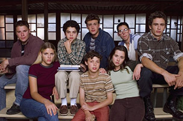
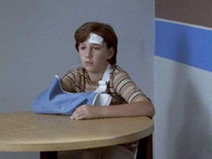
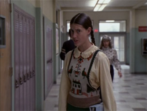

10 Reasons to Stop What You're Doing and Watch Freaks and Geeks On Netflix
This weekend we were pleasantly surprised to discover that Freaks and Geeks has been added to Netflix Instant. Naturally, our response was to immediately delve back into the unjustly canceled Judd Apatow series. Here are 10 reasons why you should stop whatever it is you’re doing and do the same.
10. The music
The music is essentially a supporting character onFreaks and Geeks. In fact, difficulty securing the rights for its killer, period-specific soundtrack was the main reason why the show (which aired for one season in 1999) wasn’t released on DVD until 2004. Thankfully, that’s all been sorted out and we can relive some of the best uses of music on TV, like Nick serenading Lindsay with Styx’s “Lady,” the freaks driving aimlessly on Halloween to Cheap Trick’s “Gonna Raise Hell,” Janis Joplin belting out a mournful “Maybe” after Lindsay finds Daniel and Kim making out on her bed, Daniel (who once wisely taught us that “rock and roll don’t come from your brain; it comes from your crotch”) discovering punk rock, or Bill enjoying some alone time to The Who’s “I’m One”—which you can watch below.
9. The cast
Nearly everyone who starred on Freaks and Geeks has gone on to bigger and better things—so much so that it almost seems laughable that NBC decided to pull the plug on this show after just 18 episodes. “It’s an Apatow teen comedy, starring James Franco, Jason Segel and Seth Rogen” is pretty much all you’d have to say today to start a network bidding war, but beyond that, the entire ensemble was perfectly cast. Linda Cardellini is the heart of the show as Lindsay Weir. Busy Phillips steals every scene she’s in as Kim Kelly, and John Francis Daley is adorable as Lindsay’s dorky brother Sam.

Cast of Freaks and Geeks
8. The cameos
That’s baby Shia LaBeouf as Hebert, the school mascot who breaks his arm, below. He’s just one of many people you’ll recognize in bit parts on Freaks and Geeks. There’s Rashida Jones as the bullying, boyfriend-stealing Karen Scarfoli, Ben Stiller as a secret service agent considering a new career path, Jason Schwartzman as a fake ID salesman, Lizzy Caplan as Sarah (Nick’s disco-loving rebound gal) and more. And, while it’s more of a recurring role than a cameo, Tom Wilson (who you probably know best as Biff from Back to the Future) turns up as gym teacher Mr. Fredericks, and it’s nothing short of awesome.

Shia Labeouf
7. It’s realistic
High-school shows tend to veer dangerously close to after-school special territory, getting preachy or offering contrived romances and happy endings. But Freaks and Geeks has an impressive realism to it. Maybe it’s because nearly all of the primary cast members were actually teenagers at the time of filming, or maybe it’s Paul Feig’s insistence that everyone on the Michigan-based show refer to soft drinks as “pop” instead of “soda” (a small touch that warms my Midwestern heart). The dialogue isn’t always as snappy as the rapid-fire one-liners on Gilmore Girls, but the teens on Freaks and Geeksspeak like real high-schoolers—even if that means a “no duh” or an “anyways” thrown in here or there. But ultimately, what it comes down to is that the characters on Freaks and Geeks are flawed people trying to figure out who they are. Sometimes they hurt each other, sometimes they make mistakes and sometimes they have to come to terms with the fact that they’ll never become famous drummers (we’re looking at you, Nick Andopolis).
6. It’s relatable
No matter who you were in high school—freak, geek, jock, or someone with feet in a few different camps—there’s someone for you to identify with on Freaks and Geeks. The storylines often dealt with run-of-the-mill adolescent issues like dealing with crushes, being picked last in gym class, cheating on tests, etc., but it never felt formulaic. Because, let’s be honest, who among us hasn’t sat through an assembly like the one below?
5. It’s concise
Hey, you’re preaching to the choir when you tell us that this show got yanked too soon. But we have to admit, the fact that Freaks and Geeks only lasted one season does make marathon viewings a lot less daunting. Plus, its early exit means that the show went out on top. The series finale—the final scene of which you can see below—leaves just the right amount of mystery and is so nearly perfect that we almost wouldn’t want any more than what we got. Almost.
4. The outfits
Sure, the clothing on Freaks and Geeks is nowhere near as chic as the wardrobe on Mad Men, but as we all know, fashion is cyclical, and it’s fun to look back at the plaid flannel shirts and colored denim and marvel at the fact that they’d be trendy again a decade after the show aired. Some of the little numbers on the show, like Sam’s Parisian nightsuit or basically anything Millie wore, will never come back, but they’re still fun to gawk at.

3. You might pick up on some stuff you missed the first time around
Rewatching a series always inspires little moments of discovery where you pick up on small touches you overlooked the first time around, and Freaks and Geeks is no different. For example, you’re only able to chuckle knowingly when Kim steps in poop and yells “I’m gonna kill that dog” in “The Diary” if you know that she does, in fact, accidentally run over said pooch with her car four episodes later (in the aptly titled “Dead Dogs and Gym Teachers”). But, for those of us who were angsty adolescents ourselves during the show’s original run, there’s also something to rewatching Freaks and Geeks with a little adult perspective. We can only hope to one day be as astute as Mr. and Mrs. Weir listening to The Who’s “Squeezebox”:
2. It’s hilarious
This almost goes without saying, but in addition to being incredibly moving and relatable, Freaks and Geeks is extremely funny. No other show has captured the inherent humor of being an awkward teenager quite like this series did.
1. This scene
No further explanation necessary.